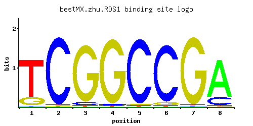

RDS1
YCR106W
Zinc cluster transcription factor involved in conferring resistance to cycloheximide
Best-performing DNA-binding model.

View and copy the recommended matrices ↘
A | 0.01 0.01 0.01 0.01 0.01 0.01 0.01 0.80 C | 0.01 0.97 0.05 0.02 0.96 0.93 0.01 0.18 G | 0.18 0.01 0.93 0.96 0.02 0.05 0.97 0.01 T | 0.80 0.01 0.01 0.01 0.01 0.01 0.01 0.01
A | 1 1 1 1 1 1 1 80 C | 1 97 5 2 96 93 1 18 G | 18 1 93 96 2 5 97 1 T | 80 1 1 1 1 1 1 1
A | -3.47 -3.47 -3.47 -3.47 -3.47 -3.47 -3.47 0.92 C | -2.89 1.68 -1.28 -2.20 1.67 1.64 -2.89 0.00 G | 0.00 -2.89 1.64 1.67 -2.20 -1.28 1.68 -2.89 T | 0.92 -3.47 -3.47 -3.47 -3.47 -3.47 -3.47 -3.47
Alternative candidate matrices 8
Historical matrix candidates from the original ScerTF database. Expand a source to inspect its original logo, scores, and matrix values.
RDS1Badis et. al.P = 3.33e-10View matrix ↘
RDS1_AFoat et. al.P = 4.37e-11View matrix ↘
RDS1_BFoat et. al.P = 1View matrix ↘
RDS1Harbison et. al.P = 2.27e-13View matrix ↘
RDS1Macisaac et. alP = 3.33e-10View matrix ↘
RDS1Morozov et. al.P = 1.49e-12View matrix ↘
RDS1Pachkov et alP = 8.25e-14View matrix ↘
RDS1Zhao and StormoP = 0.000659View matrix ↘
Gene-level annotations and interactions.
Genes bound in ChIP-chip experiments 31 genes
YCL055W, YCL056C, YCR105W, YCR106W, YCR107W, YDR144C, YDR145W, YER138C, YGL157W, YGR004W, YGR175C, YGR176W, YGR225W, YKL118W, YKL177W, YKL179C, YLR083C, YLR433C, YLR434C, YMR103C, YMR125W, YMR126C, YMR257C, YMR259C, YNL188W, YNL258C, YPL070W, YPL071C, YPL073C, YPR158W-A, YPR158W-B
Genes affected by TF deletion 111 genes
YOL047C, YDR216W, YDR190C, YDR222W, YGL045W, YGR152C, YHR180W, YJL051W, YKL049C, YMR220W, YNL271C, YBL083C, YBR029C, YBL085W, YBR001C, YCR041W, YCR015C, YCR043C, YDR003W, YDR005C, YDR065W, YDR369C, YDR401W, YDR433W, YDR371W, YDR403W, YDR435C, YER111C, YGL229C, YGL170C, YGL202W, YHL045W, YGR281W, YHL015W, YIL077C, YIL141W, YIL111W, YJR049C, YJR084W, YJR021C, YKR013W, YML113W, YOR254C, YDL127W, YFR033C, YPL014W, YCR106W, YMR103C, YGR250C, YML027W, YCR107W, YJL017W, YMR104C, YMR136W, YNL116W, YDR279W, YPR191W, YER042W, YCR021C, YDR074W, YOR267C, YPL247C, YDL076C, YKL051W, YER150W, YMR023C, YMR199W, YOR074C, YOR384W, YFR017C, YKL026C, YMR078C, YMR145C, YNL309W, YIR035C, YJR119C, YOR324C, YBR264C, YER064C, YPL087W, YGL183C, YGR292W, YOR273C, YGR138C, YNL289W, YNL035C, YAR018C, YGR139W, YDL048C, YDR177W, YNL159C, YNL160W, YGL154C, YBR054W, YER139C, YGL223C, YLR297W, YDL150W, YPR106W, YDR055W, YIL103W, YMR034C, YMR181C, YMR250W, YOR092W, YCL040W, YDR155C, YDR523C, YOL101C, YOL165C, YNR019W
Genes supported by both experiments 3 genes
YCR106W, YCR107W, YMR103C
Predicted TF–TF partners 6 genes
HAP2, HAP4, OAF1, PHD1, STB1, SWI4